Строительство и ремонт автомобильных дорог, устройство асфальтобетонных покрытий, холодное фрезерование, благоустройство территорий. Собственный асфальтобетонный завод и парк дорожной техники — от выпуска смеси до уплотнения покрытия.
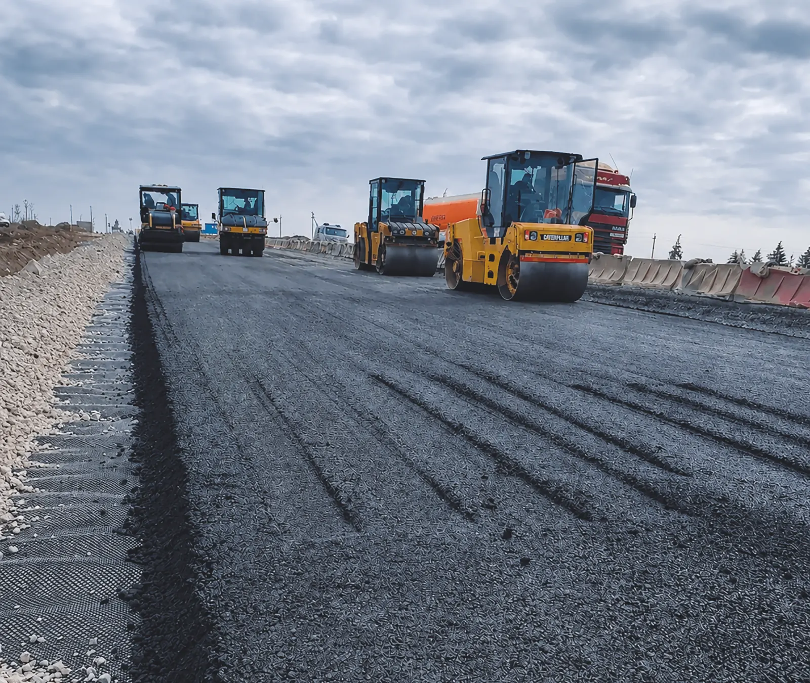
Устройство земляного полотна, оснований и асфальтобетонных покрытий.
ПОЛНЫЙ ЦИКЛУстройство покрытий на территориях промышленных, складских и общественных объектов.
ПОКРЫТИЯСнятие изношенных асфальтобетонных и цементобетонных покрытий фрезами Wirtgen и Caterpillar.
2 ФРЕЗЫТекущий и капитальный ремонт асфальтобетонных и цементобетонных покрытий.
ТЕКУЩИЙ И КАПИТАЛЬНЫЙБлагоустройство территорий объектов по завершении строительно-монтажных работ.
БЛАГОУСТРОЙСТВОСобственный завод PRIMACH 160: выпуск асфальтобетонной смеси согласован с графиком укладки.
PRIMACH 160Асфальтобетонные работы включаются в общий график производства работ группы TesseracT. Заказчик получает единого координатора по объекту — от монолитных конструкций до финишного покрытия — без отдельного поиска и согласования дорожного подрядчика.
По списку эксплуатируемой техники ООО «ГалАрт-Строй».
| Техника | Характеристика | Кол-во |
|---|---|---|
| Асфальтобетонный завод | ||
| PRIMACH 160 | производство асфальтобетонной смеси | 1 |
| Асфальтоукладчики · 13 | ||
| Volvo 7820D | 2023 г. | 3 |
| Volvo 4820D | 2021 г. | 2 |
| Vögele 1800-3 | 2019 г. | 3 |
| Vögele 1300-3 | 2015 г. | 2 |
| Vögele 1300-2 | 2007 г. | 3 |
| Дорожные фрезы · 2 | ||
| Wirtgen W155 CFi | фрезеровка покрытий | 1 |
| Caterpillar PM620 | фрезеровка покрытий | 1 |
| Дорожные катки · 12 | ||
| Caterpillar CB34 | 4 т | 1 |
| Caterpillar CB34XW | 4,5 т | 1 |
| Caterpillar 434 | 7 т | 1 |
| JCB 860 | 9 т | 1 |
| DM 10VC | 10,5 т | 1 |
| Caterpillar 534D | 11 т | 1 |
| Bomag 203 | 14 т | 1 |
| ДУ-84 | 14 т | 1 |
| SDLG 8114 | 14 т | 1 |
| XCMG 143 | 14 т, с прижимным роликом | 1 |
| Sany 143 | 14 т, с прижимным роликом | 1 |
| Caterpillar CB8 | с прижимным роликом | 1 |
| Землеройная и погрузочная техника · 8 | ||
| Автогрейдер SDLG 9190F | профилирование основания | 1 |
| Экскаватор колёсный Volvo 205D | ковш 1,2 м³ | 1 |
| Экскаватор гусеничный | ковш 1,2 м³ | 1 |
| Экскаватор-погрузчик Case 695 | — | 1 |
| Фронтальный погрузчик SDLG 936 / 936H | ковш 2 м³ | 2 |
| Фронтальный погрузчик Амкодор 332 | ковш 2 м³ | 1 |
| Мини-погрузчик Mustang 4000V | — | 1 |
| Транспорт · 18 | ||
| Самосвалы Тонар | 30 м³ | 6 |
| Самосвалы | 35 м³ | 6 |
| Самосвалы КамАЗ | 12 м³ | 2 |
| Низкорамные тралы | перевозка техники | 3 |
| Водовоз | 10 м³ | 1 |
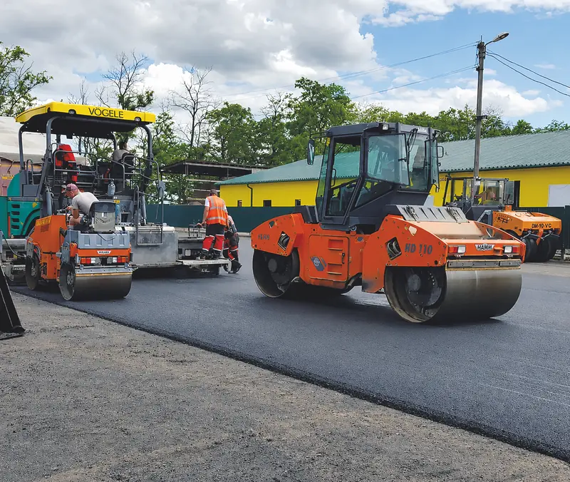
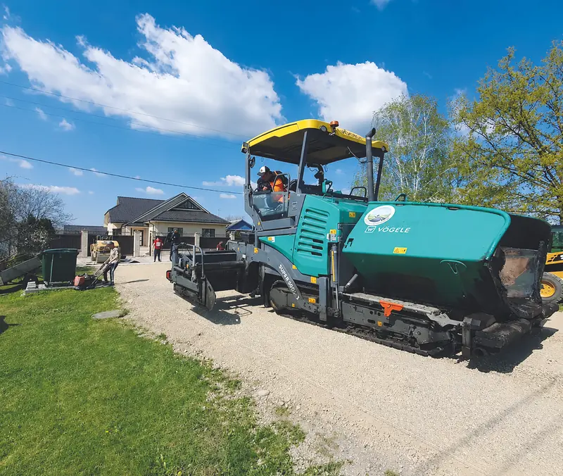
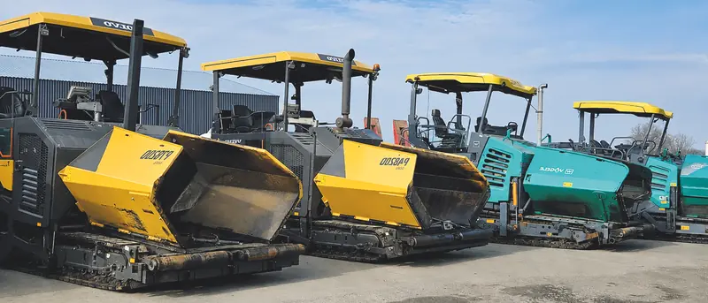
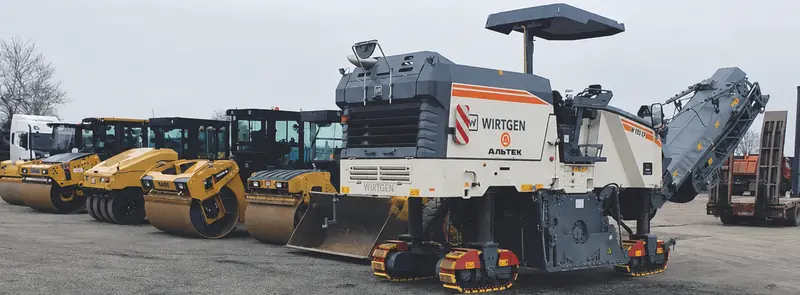
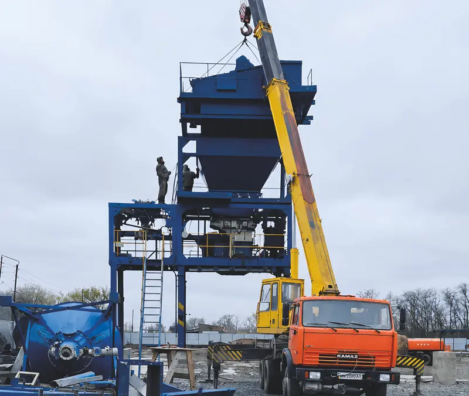
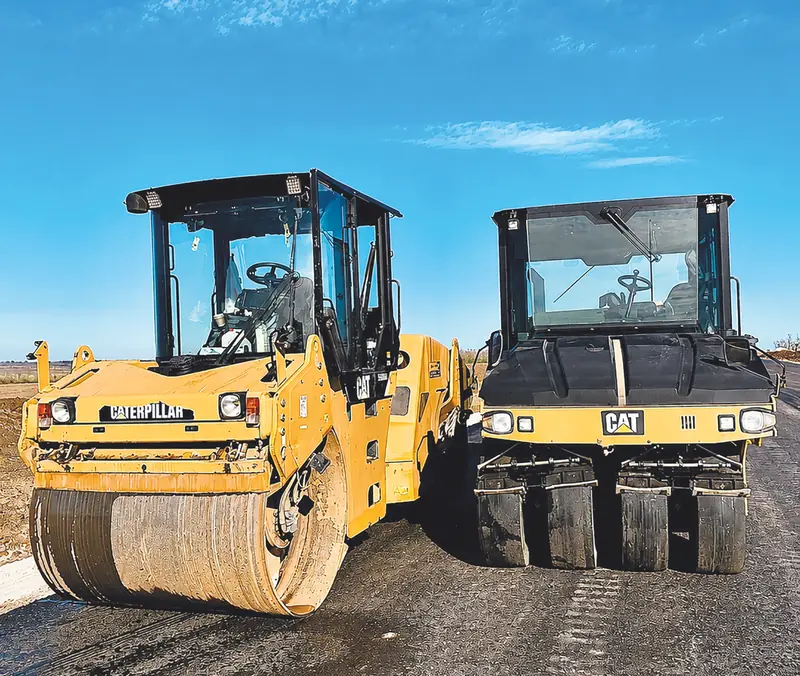
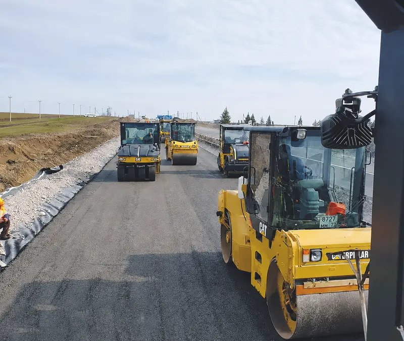
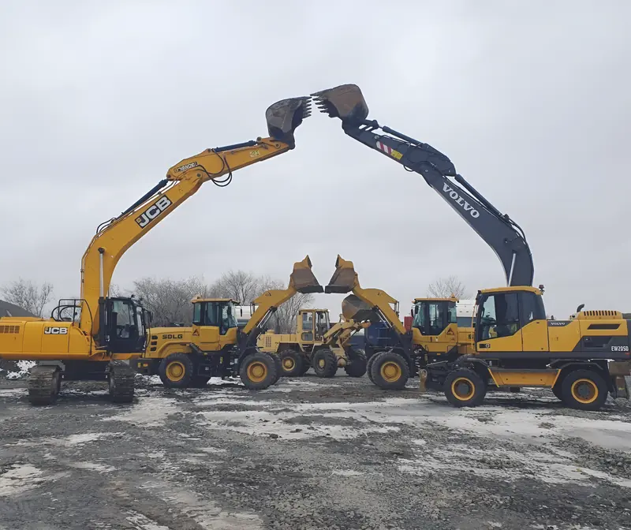
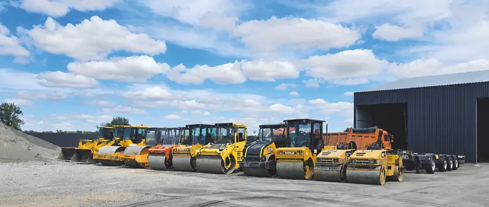
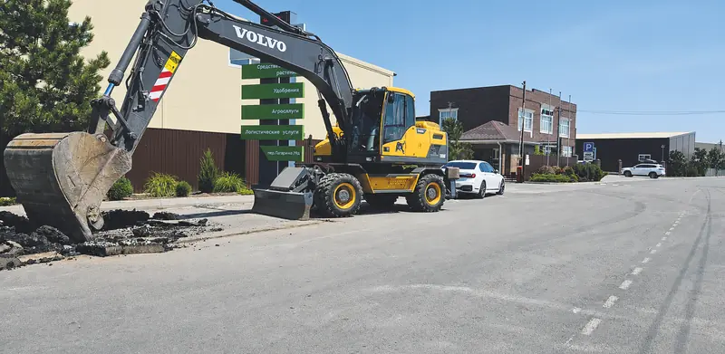
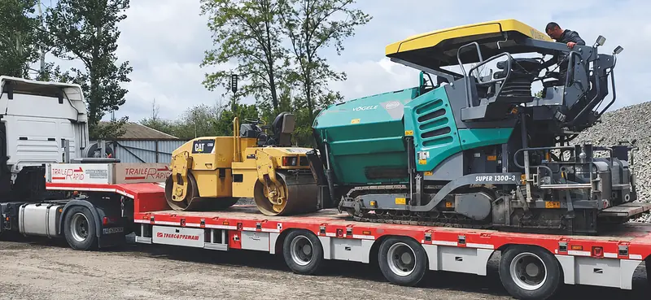
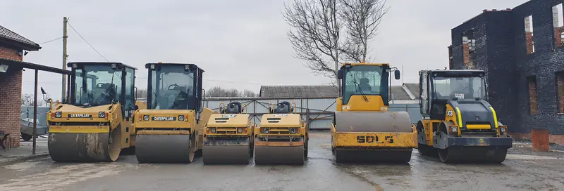
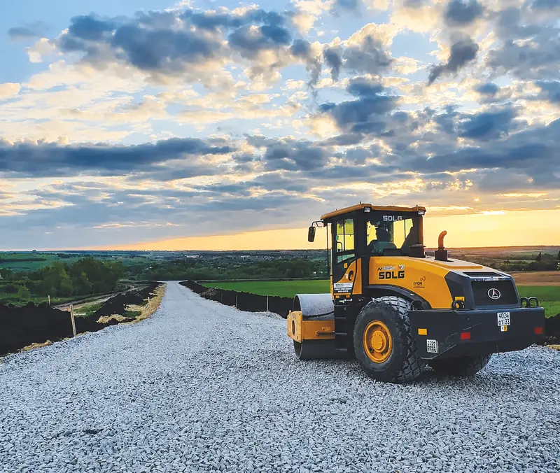
Направьте проектную документацию или ведомость объёмов работ — подготовим расчёт стоимости, потребность в технике и сроки выполнения. Заявки по направлению принимает группа TesseracT.
Отправить запрос